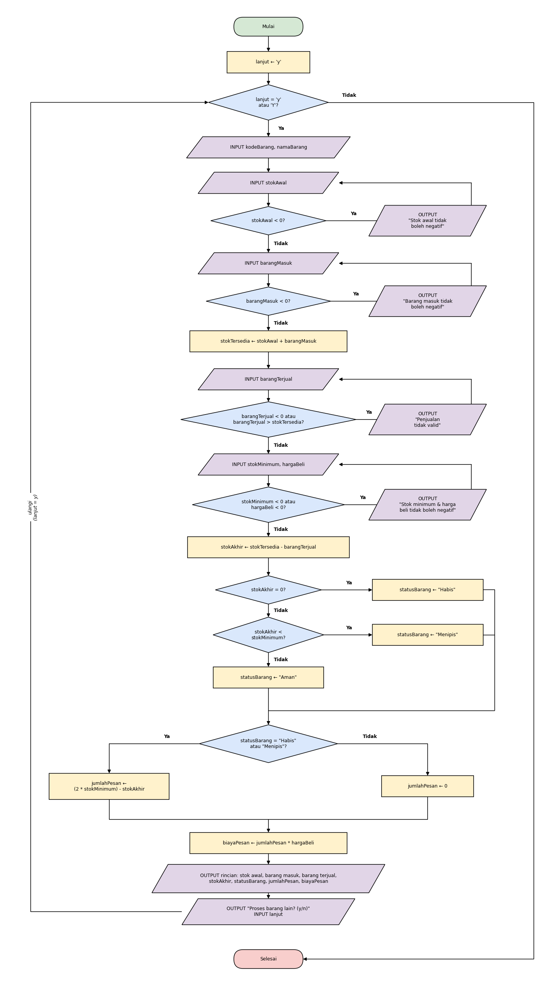

Studi Kasus 06 · Kelompok 6
Modul A
Penanggung jawab: Kevin Sebastian Liem (NIM 322610006)
Algoritma Deskriptif
 Klik gambar untuk melihat ukuran penuh.Algoritma Deskriptif
Pseudocode
Pseudocode
ALGORITMA ModulA_EvaluasiPersediaan
DEKLARASI
kodeBarang, namaBarang, statusBarang : string
stokAwal, barangMasuk, barangTerjual : integer
stokMinimum, hargaBeli, stokTersedia : integer
stokAkhir, jumlahPesan, biayaPesan : integer
lanjut : char
DESKRIPSI
lanjut ← 'y'
WHILE lanjut = 'y' OR lanjut = 'Y' DO
INPUT kodeBarang, namaBarang
REPEAT
INPUT stokAwal
IF stokAwal < 0 THEN OUTPUT "Stok awal tidak boleh negatif"
UNTIL stokAwal >= 0
REPEAT
INPUT barangMasuk
IF barangMasuk < 0 THEN OUTPUT "Barang masuk tidak boleh negatif"
UNTIL barangMasuk >= 0
stokTersedia ← stokAwal + barangMasuk
REPEAT
INPUT barangTerjual
IF barangTerjual < 0 OR barangTerjual > stokTersedia THEN
OUTPUT "Penjualan tidak valid"
END IF
UNTIL barangTerjual >= 0 AND barangTerjual <= stokTersedia
REPEAT
INPUT stokMinimum, hargaBeli
IF stokMinimum < 0 OR hargaBeli < 0 THEN
OUTPUT "Stok minimum dan harga beli tidak boleh negatif"
END IF
UNTIL stokMinimum >= 0 AND hargaBeli >= 0
stokAkhir ← stokTersedia - barangTerjual
IF stokAkhir = 0 THEN
statusBarang ← "Habis"
ELSE IF stokAkhir < stokMinimum THEN
statusBarang ← "Menipis"
ELSE
statusBarang ← "Aman"
END IF
IF statusBarang = "Habis" OR statusBarang = "Menipis" THEN
jumlahPesan ← (2 * stokMinimum) - stokAkhir
ELSE
jumlahPesan ← 0
END IF
biayaPesan ← jumlahPesan * hargaBeli
OUTPUT rincian barang, stokAkhir, statusBarang, jumlahPesan, biayaPesan
OUTPUT "Proses barang lain? (y/n)"
INPUT lanjut
END WHILE
SELESAIFlowchart
Flowchart
Source Code dan Penjelasan
Source Code dan Penjelasan
#include <iostream>
#include <string>
using namespace std;
int main() {
// Deklarasi variabel
string kodeBarang, namaBarang, statusBarang;
int stokAwal = 0, barangMasuk = 0, barangTerjual = 0;
int stokMinimum = 0, hargaBeli = 0, stokTersedia = 0;
int stokAkhir = 0, jumlahPesan = 0, biayaPesan = 0;
char lanjut = 'y';
cout << "=== EVALUASI PERSEDIAAN BARANG (MODUL A) ===" << endl;
// Perulangan utama: proses barang selama petugas memilih lanjut
while (lanjut == 'y' || lanjut == 'Y') {
cout << "\n--- Data Barang ---" << endl;
cout << "Kode barang : ";
getline(cin >> ws, kodeBarang);
cout << "Nama barang : ";
getline(cin >> ws, namaBarang);
// Validasi stok awal (tidak boleh negatif atau bukan angka)
do {
cout << "Stok awal : ";
if (!(cin >> stokAwal)) {
cin.clear();
cin.ignore(10000, '\n');
stokAwal = -1;
}
if (stokAwal < 0)
cout << " [!] Harus berupa angka dan tidak boleh negatif." << endl;
} while (stokAwal < 0);
// Validasi barang masuk
do {
cout << "Barang masuk: ";
if (!(cin >> barangMasuk)) {
cin.clear();
cin.ignore(10000, '\n');
barangMasuk = -1;
}
if (barangMasuk < 0)
cout << " [!] Harus berupa angka dan tidak boleh negatif." << endl;
} while (barangMasuk < 0);
// Stok yang tersedia untuk dijual
stokTersedia = stokAwal + barangMasuk;
// Validasi barang terjual (tidak boleh melebihi stok tersedia)
do {
cout << "Barang terjual (maks " << stokTersedia << "): ";
if (!(cin >> barangTerjual)) {
cin.clear();
cin.ignore(10000, '\n');
barangTerjual = -1;
}
if (barangTerjual < 0 || barangTerjual > stokTersedia)
cout << " [!] Penjualan tidak valid (0 sampai " << stokTersedia << ")." << endl;
} while (barangTerjual < 0 || barangTerjual > stokTersedia);
// Validasi stok minimum
do {
cout << "Stok minimum: ";
if (!(cin >> stokMinimum)) {
cin.clear();
cin.ignore(10000, '\n');
stokMinimum = -1;
}
if (stokMinimum < 0)
cout << " [!] Harus berupa angka dan tidak boleh negatif." << endl;
} while (stokMinimum < 0);
// Validasi harga beli
do {
cout << "Harga beli : Rp";
if (!(cin >> hargaBeli)) {
cin.clear();
cin.ignore(10000, '\n');
hargaBeli = -1;
}
if (hargaBeli < 0)
cout << " [!] Harus berupa angka dan tidak boleh negatif." << endl;
} while (hargaBeli < 0);
// Hitung stok akhir
stokAkhir = stokTersedia - barangTerjual;
// Tentukan status barang
if (stokAkhir == 0) {
statusBarang = "Habis";
} else if (stokAkhir < stokMinimum) {
statusBarang = "Menipis";
} else {
statusBarang = "Aman";
}
// Hitung jumlah pesan: sampai stok mencapai dua kali stok minimum
if (statusBarang == "Habis" || statusBarang == "Menipis") {
jumlahPesan = (2 * stokMinimum) - stokAkhir;
} else {
jumlahPesan = 0;
}
// Hitung biaya pemesanan
biayaPesan = jumlahPesan * hargaBeli;
// Tampilkan rincian
cout << "\n--- Rincian Barang ---" << endl;
cout << "Kode / Nama : " << kodeBarang << " / " << namaBarang << endl;
cout << "Stok awal : " << stokAwal << endl;
cout << "Barang masuk : " << barangMasuk << endl;
cout << "Barang terjual : " << barangTerjual << endl;
cout << "Stok akhir : " << stokAkhir << endl;
cout << "Stok minimum : " << stokMinimum << endl;
cout << "Status : " << statusBarang << endl;
cout << "Jumlah dipesan : " << jumlahPesan << " unit" << endl;
cout << "Biaya pemesanan : Rp" << biayaPesan << endl;
cout << "\nProses barang lain? (y/n): ";
cin >> lanjut;
}
cout << "\nProgram selesai." << endl;
return 0;
}Hasil Eksekusi dan Pengujian